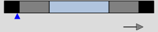

An indicator graphically indicates the value of the associated process variable without actually displaying its value.
Purpose: to graphically indicate the current value of an analogue (floating point) process variable (PV), by means of a sliding pointer along a horizontal or vertical range defined by the currently specified Maximum and Minimum engineering span of this Analogue process variable, while also indicating its currently specified normal operating range.
Description: A horizontal or vertical rectangle, whereby:
ONLY if the statsPeriod slot of the Analog agent representing this process variable is configured, then a directional arrow may also be displayed indicating the current direction of trend i.e. an arrow pointing up when the value is going up or another arrow pointing down when the value is going down or no arrow at all when the value is stable. For more details, see Calculating statistics from Analog values.
PLEASE NOTE: This direction of trend is ONLY calculated by the Analog agent representing the process variable, when its statsPeriod slot is set to the required sampling period, we recommend a value of 10 (minutes), since the default value of 0 DISABLES the calculation of these statistics, since if used excessively they can affect performance.
Tip: You can also configure the optional statsDirDev slot specify an optional minimum deviation or deadband to ensure that this trending direction only indicates significant changes in value (we recommend setting this value to 0.05).

The following analogue indicators are available:
Horizontal analogue indicators, where the minimum range is on the left and the maximum range is on the right and the sliding pointer is on the bottom, in the following sizes:
wzdAnalogueIndicator_Small_Horizontal_v01: a small horizontal analogue indicator
wzdAnalogueIndicator_Medium_Horizontal_v01: a medium horizontal analogue indicator
wzdAnalogueIndicator_Large_Horizontal_v01: a large horizontal analogue indicator
Vertical analogue indications, where the minimum range is on the bottom and the maximum range is on the top and the sliding pointer is on the right, in the following sizes:
wzdAnalogueIndicator_Small_Vertical_v01: a small vertical analogue indicator
wzdAnalogueIndicator_Medium_Vertical_v01: a medium vertical analogue indicator
wzdAnalogueIndicator_Large_Vertical_v01: a large vertical analogue indicator
Required values:
Note: When this wizard is added to a graphic form, all these values are MANDATORY and therefore must ALL be specified.
Tip: These values are listed in the order they are specified in the wizard.
The wizard will automatically use the Maximum and Minimum engineering spans configured for this Analog agent and the configured High High, High, Low and Low Low alarm limits to define the various range settings and the various statistical settings to determine the applicable direction of trend.
PLEASE NOTE: This direction of trend is ONLY calculated by the Analog agent representing the process variable, when its statsPeriod slot is set to the required sampling period, we recommend a value of 10 (minutes), since the default value of 0 DISABLES the calculation of these statistics, since if used excessively they can affect performance.
Tip: You can also configure the optional statsDirDev slot specify an optional minimum deviation or deadband to ensure that this trending direction only indicates significant changes in value (we recommend setting this value to 0.05).